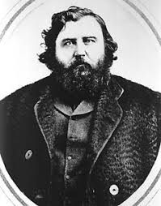
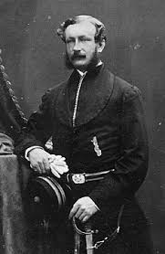
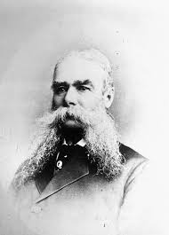
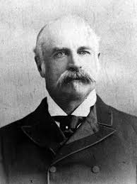

.gif)
Communities Included in Treaty 1
| Community / First Nation | Nation / Ethnic Affiliation |
|---|---|
| Brokenhead Ojibway Nation | Anishinaabe (Ojibwe) |
| Long Plain First Nation | Anishinaabe (Ojibwe) |
| Peguis First Nation | Anishinaabe (Ojibwe) |
| Roseau River Anishinabe First Nation | Anishinaabe (Ojibwe) |
| Sagkeeng First Nation | Anishinaabe (Ojibwe) |
| Sandy Bay Ojibway First Nation | Anishinaabe (Ojibwe) |
| Swan Lake First Nation | Anishinaabe (Ojibwe) |
| Dakota Plains Wahpeton Nation | Dakota |
| Dakota Tipi First Nation | Dakota |
| Canupawakpa Dakota Nation | Dakota |
| Buffalo Point First Nation | Anishinaabe (Ojibwe) |
| Little Saskatchewan First Nation | Cree |
| Fisher River Cree Nation | Cree |
| Kinonjeoshtegon First Nation | Cree/Ojibwe Heritage |
Key Figures
Several key figures played a significant role in the negotiation and signing of Treaty 1.
The key figures involved in the negotiation included:
- Ojibwe Chief Peguis
- Chief Henry Prince (Mis-koo-kee-new, Chief Peguis's son)
- Canadian government officials
Chief Peguis

Chief Peguis was a prominent Ojibwe leader who played a crucial role in the negotiation and signing of Treaty 1. He was known for his wisdom and diplomatic skills, which helped facilitate the agreement between the Indigenous peoples and the Canadian government. Chief Peguis worked to protect the rights and interests of the Anishinaabeg of Red River. He stepped in to save lives when fur trade animosities threatened the Selkirk Settlement.
Chief Henry Prince (Mis-koo-kee-new)

Chief Henry Prince (Mis-koo-kee-new) was the son of Chief Peguis and played a significant role in the negotiation and signing of Treaty 1. He was known for his leadership and commitment to protecting the rights and interests of the Anishinaabeg of Red River. Chief Peguis’ most prominent son was Chief Henry Prince (Mis-koo-ke-new or "Red Eagle") (c. 1819–1902), who succeeded him as leader of the St. Peter's Indian Reserve. During the 1869–1870 Red River Rebellion, he resisted pressures from Louis Riel to join forces, maintaining a distinct position for his community. He was baptized as Henry Prince, a surname adopted by several of Peguis' children following their father’s baptism around 1840.
Canadian Government Officials
Major Government Officials involved in the negotiation and signing of Treaty 1 included:

Adams George Archibald: The first Lieutenant-Governor of Manitoba and the Northwest Territories. He acted as the senior representative for the Crown, delivered the main negotiation speeches, and promised many "outside promises" not included in the final written text. He was based in Nova Scotia for most of his career, though he also served as first Lieutenant Governor of Manitoba from 1870 to 1872. Archibald was born in Truro to a prominent family in Nova Scotian politics.

Wemyss M. Simpson: Appointed by the federal government as the Indian Commissioner for the treaty negotiations. He was a former Conservative MP from Ontario and acted as the lead negotiator for the Crown alongside Archibald. Wemyss Mackenzie Simpson was a Canadian politician and businessman who was active in Canada in the mid-to-late 1800s. He is notable for quite a number of accomplishments around the Algoma district, which obviously makes him very relevant to Sault Ste. Marie's history.

James McKay: A key figure in the treaty negotiations, James McKay was a prominent Métis leader and fur trader. He played a significant role in the negotiation and signing of Treaty 1, representing the interests of the Métis community. James McKay was a prominent Métis leader and fur trader who played a significant role in the history of Western Canada. He was involved in various negotiations with Indigenous peoples and the Canadian government, including Treaty 1. McKay's contributions to the treaty negotiations were crucial in shaping the agreements made between the Crown and Indigenous peoples.

Major Acheson G. Irvine: A key figure in the treaty negotiations, Major Acheson G. Irvine was a military officer who played a significant role in the negotiation and signing of Treaty 1. He represented the interests of the Canadian government during the treaty negotiations and contributed to the agreements made between the Crown and Indigenous peoples. Major Acheson G. Irvine was a military officer who played a significant role in the history of Western Canada. He was involved in various military operations and negotiations with Indigenous peoples and the Canadian government, including Treaty 1. Irvine's contributions to the treaty negotiations were crucial in shaping the agreements made between the Crown and Indigenous peoples.

Lieutenant Colonel John Stoughton Dennis: A key figure in the treaty negotiations, Lieutenant Colonel John Stoughton Dennis was a military officer who played a significant role in the negotiation and signing of Treaty 1. He represented the interests of the Canadian government during the treaty negotiations and contributed to the agreements made between the Crown and Indigenous peoples. Lieutenant Colonel John Stoughton Dennis was a military officer who played a significant role in the history of Western Canada. He was involved in various military operations and negotiations with Indigenous peoples and the Canadian government, including Treaty 1. Dennis's contributions to the treaty negotiations were crucial in shaping the agreements made between the Crown and Indigenous peoples.

Molyneux St. John: A key figure in the treaty negotiations, Molyneux St. John was a government official who played a significant role in the negotiation and signing of Treaty 1. He represented the interests of the Canadian government during the treaty negotiations and contributed to the agreements made between the Crown and Indigenous peoples. Molyneux St. John was a government official who played a significant role in the history of Western Canada. He was involved in various negotiations with Indigenous peoples and the Canadian government, including Treaty 1. St. John's contributions to the treaty negotiations were crucial in shaping the agreements made between the Crown and Indigenous peoples.
These key figures, including Chief Peguis, Chief Henry Prince (Mis-koo-kee-new), and various Canadian government officials, played crucial roles in the negotiation and signing of Treaty 1. Their contributions were instrumental in shaping the agreements made between the Crown and Indigenous peoples, and their legacies continue to be remembered in the history of Treaty 1.
Other notable individuals involved in the treaty negotiations include Abraham Cowley, Donald Gunn, and Thomas Howard.